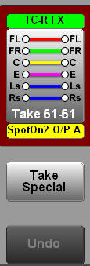

Audio Take Component
This component is the implementation of what's defined in
Sky project SF03 section 8.2.1 and 8.2.2.
Description
This is a custom take component for Sky to router mono,
stereo or surround (5.1) audio.
This actually uses age-old BNCS principles of "route with
mask" where the mask defines how the route should be made.
You'll see various references to "mask" in the code for this
reason.
This is the default presentation (with source and
destination values having been set to "5.1" sources.

...and this a sample set of "Take Special" options:

This control uses router databases to determine whether a
source/destination is mono, stereo, 5.1 or 7/8.
This control does not make routes itself, but it does
provide a "take" event for other controls to make routes.
Note: This control works with global destination
numbers. The instance (and lock instance) supplied defined
the base infodriver number from which the appropriate device
number is calculated. In practice this is an easy
calculation
device = base_device + ( global_dest / 4096 );
destination = global_dest % 4096
This control is optimised for use with UI "connections".
Commands
| Name |
Type |
Use |
| instance |
mandatory |
Instance of the device to take router source names
from
This is also used to determine the destination
device which is calculated as above |
| lock_instance |
optional |
The base instance of the device to get lock
information from. If it isn't supplied then the
take button is always enabled with valid source/dest/take
mode.
This isn't an absolute device - device number is
determined by the current destination |
| global_dest |
runtime |
The global destination index - this is used to put
the router dest name in the pre-select label |
| source |
runtime |
The source index - this is used to put the
router source name in the pre-select label |
Notifications
| Name |
Use |
| take.<global_dest_index.<mask>=<source> |
when the take button is pressed
<global_dest_index> is the global dest index
<mask> is "how" to make the route for the given
indices
<source is the source index |
| undo |
when the undo button is pressed |
Stylesheets
| Name |
Use |
| dest_selected |
Shown on the dest pre-select tally when the
destination is set |
| dest_deselected |
When the destination is not set |
| source_selected |
Shown on the source pre-select tally when
the source is set |
| source_deselected |
When the source is not set |
| takeBackground |
Background to the take button |
| groupbox |
background to the control |
Developers Notes
Internally the control makes consistent use of the "mask"
- so that the value passed as "mask" is also the name of the
buttons on the popup window.
|